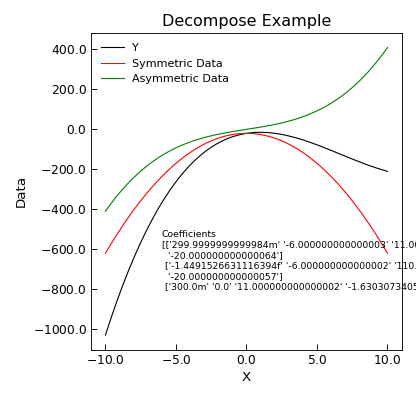

Data.decompose¶
-
Data.decompose(xcol=None, ycol=None, sym=None, asym=None, replace=True, **kwords)¶ Given (x,y) data, decomposes the y part into symmetric and antisymmetric contributions in x.
Keyword Arguments: - xcol (index) – Index of column with x data - defaults to first x column in self.setas
- ycol (index or list of indices) – indices of y column(s) data
- sym (index) – Index of column to place symmetric data in default, append to end of data
- asym (index) – Index of column for asymmetric part of ata. Defaults to appending to end of data
- replace (bool) – Overwrite data with output (true)
Returns: self – The newly modified
AnalysisMixin.Example
"""Decompose Example""" from Stoner import Data from Stoner.tools import format_val from numpy import linspace, reshape, array x = linspace(-10, 10, 201) y = 0.3 * x ** 3 - 6 * x ** 2 + 11 * x - 20 d = Data(x, y, setas="xy", column_headers=["X", "Y"]) d.decompose() d.setas = "xyyy" coeffs = d.polyfit(polynomial_order=3) str_coeffs = [format_val(c, mode="eng") for c in coeffs.ravel()] str_coeffs = reshape(array(str_coeffs), coeffs.shape) d.plot() d.text(-6, -800, "Coefficients\n{}".format(str_coeffs), fontdict={"size": "x-small"}) d.ylabel = "Data" d.title = "Decompose Example" d.tight_layout()


{kind=link}
{kind=link}